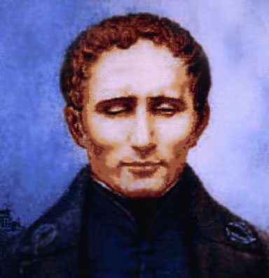
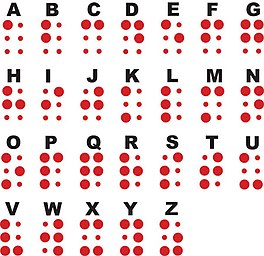
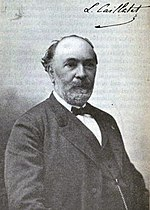
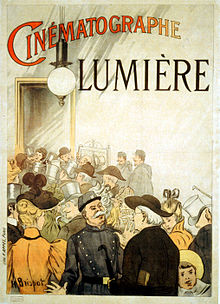
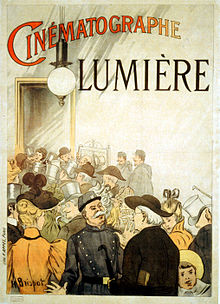

A Braille-írás vagy Braille-ABC egy speciális technikát alkalmazó ábécé, amelyet 1824-ben a vakok számára talált ki. Segítségével lehetővé vált számukra az olvasáson túl az írás elsajátítása is.
 gázok alacsony hőmérsékletre való hűtésével és cseppfolyósításával kezdett foglalkozni. 1877-ben sikeresen előállított folyékony oxigént.
Az elektromossággal kísérletezett. Találmányai közül kiemelkedik a hidrométer egyik típusa, a tükrös goniométer, továbbfejlesztette a Gravesand-féle heliosztátot és Fahrenheit sűrűség- és nyomásmérőjét. A Robert testvérekkel (Nicolas és Anne-Jean) együtt 1783-ban megépítette az egyik legelső hidrogénléggömböt. Nicolas Roberttel elsőként szállt a magasba hidrogén töltésű léggömbbel.

1827-ben találkozott Joseph Niépce-szel, aki szintén a fényképezőgép feltalálásán dolgozott. Rá két évre társultak. Niepce 1833-ban meghalt. Daguerre-nek egyedül 1837-re sikerült kifejlesztenie az azóta róla elnevezett a dagerrotípiát, egy évvel később elkészítette a világ első embert ábrázoló fotográfiáját
A Lumière fivérek – elsősorban Louis technikai zsenialitásának köszönhetően számos fotográfiai újítást hajtottak végre, s mintegy 170 szabadalomnak lettek tulajdonosai. Közülük a leginkább figyelemre méltó az 1881-ben levédett száraz-lemezes eljárás volt, mellyel fontos lépést tettek a mozgókép-készítés felé.
 

forrás:
wikipédia